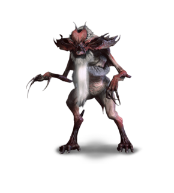

Bruxa
Bruxa - wampir z rodzaju wampirów wyższych,ktory nie obawia sie swiatla slonecznego, potrafiący powalić przeciwnika za pomocą fali dźwiękowej.
Posiada ostre kły, po wypiciu krwi śpiewa. Potrafi się przetransformować w czarnego nietoperza.
Atakuje zarówno w noce jak we dnie. Występuje pod postacią kobiety.
Ekimma

Ekimma - rodzaj wampira, z rodzaju wampirów niższych, z reguły rozszarpuje swoje ofiary.
Alp
Alp - rodzaj wampira. Jest to tzw. wampir wyższy, przez niektórych nazywany także zmorą.
Występuje pod postacią ludzką- kobiety, potrafi się polimorfować w zwierzęta takie jak pies czy kot.
Spotkać go można zwykle w okolicach wsi. Atakuje tylko nocą podczas pełni.
Krew wysysa głównie ze śpiących istot, wgryzając się wstrzykuje w ciało ofiary usypiającą substancję, powodującą koszmary.